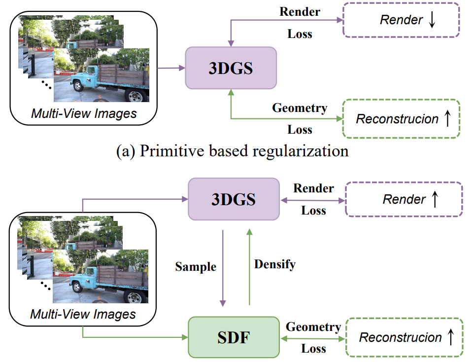
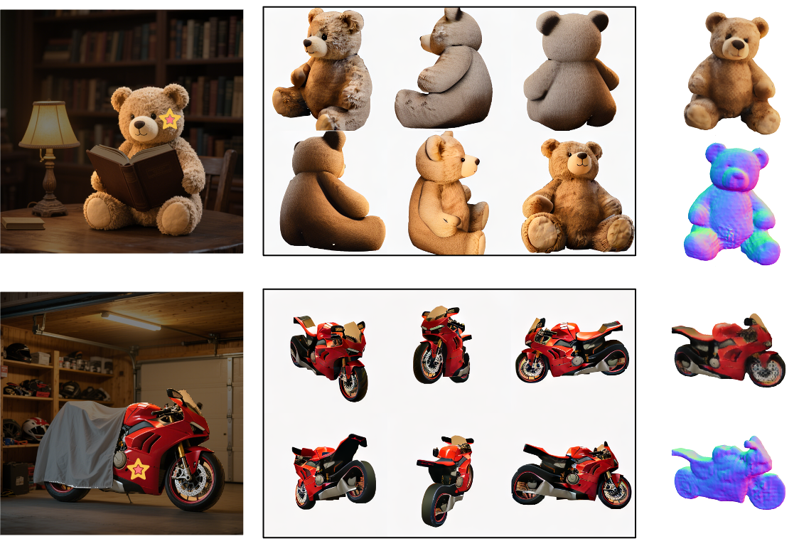
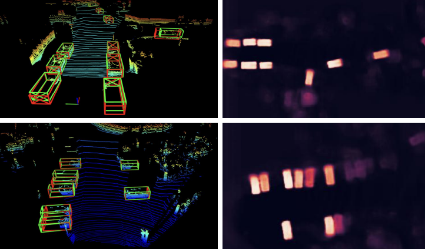

|
You Shen | 沈 优
I am a second-year Ph.D student in the Key Laboratory of Multimedia Trusted Perception and Efficient Computing, Ministry of Education of China, Xiamen University , advised by Prof. Rongrong Ji and Prof. Liujuan Cao. Notably, I work closely with Prof. Zhipeng Zhang. 😎
My research interest lies in the Machine Learning and 3D Computer Vision.
Email /
Google Scholar /
Github
|
|
|
Selected Publications
* indicates equal contribution
|
|

|
Evolving High-Quality Rendering and Reconstruction in a Unified Framework with Contribution-Adaptive Regularization
You Shen*,
Zhipeng Zhang*,
Xinyang Li ,
Yansong Qu,
,
Yu Lin ,
Shengchuan Zhang,
Liujuan Cao
CVPR, 2025
[arXiv]
|
|

|
DeOcc-1-to-3: 3D De-Occlusion from a Single Image via Self-Supervised Multi-View Diffusion
Yansong Qu,
Shaohui Dai,
Xinyang Li ,
Yuze Wang,
You Shen,
Liujuan Cao,
Rongrong Ji
arXiv, 2025
[arXiv]
[Code]
[Project Page]
|
|

|
BSH-Det3D: Improving 3D Object Detection with BEV Shape Heatmap
You Shen,
Yunzhou Zhang,
Yanmin Wu ,
Zhenyu Wang ,
Linghao Yang ,
Sonya Coleman,
Dermot Kerr
CVPR, 2025
[arXiv]
[Code]
|
|
Academic Services
Conference Review:
International Conference on Computer Vision (ICCV) 2025.
IEEE Conference on Computer Vision and Pattern Recognition (CVPR) 2025.
International Conference on Learning Representations (ICLR) 2025.
ACM International Conference on Multimedia (MM) 2024, 2025.
|
|